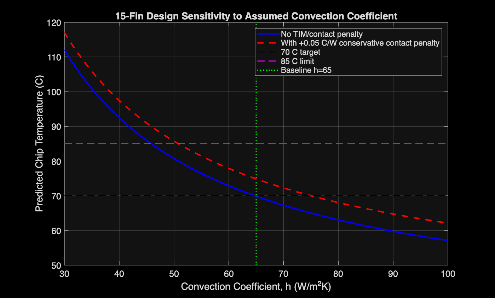
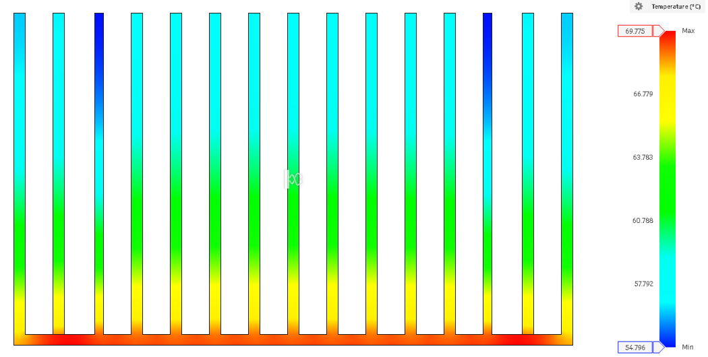
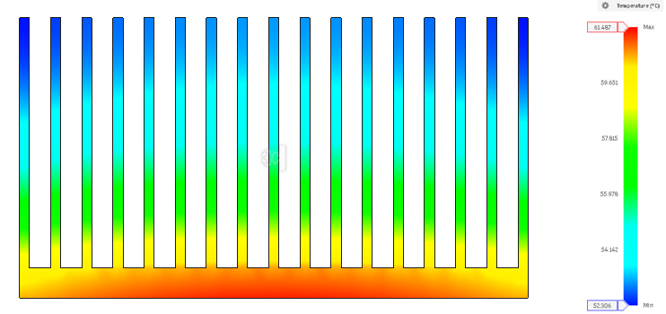
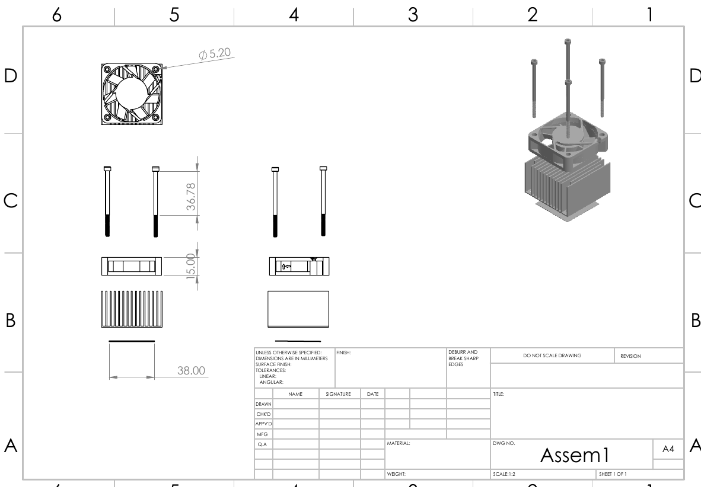

Design review · Solo · Spring 2026
15-fin heat sink for a 100 W CPU
I designed a forced-convection heat sink to keep a 50.8 mm CPU at or below 85 °C while it dissipates 100 W. My MATLAB model predicts 69.85 °C. It has not been built or bench tested, and this page says where the numbers could be wrong.
| Part | 15-fin plate-fin heat sink with 50 mm fan |
|---|---|
| Material | Al-6061 / Al-6061-T6 |
| Course | ENGG 114 Heat Transfer, Hofstra University |
| Author | Adriel Ventura (individual project) |
| Tools | MATLAB, Fusion 360, SOLIDWORKS |
| Status | Analysis and simulation only. Not bench tested. |

| Stage | What | Result | Decision |
|---|---|---|---|
| 1 | Screen three concepts | Plate-fin with fan best balance | Keep concept C |
| 2 | 17-fin ideal baseline | 61.487 °C (Fusion 360) | Cooler, but 2.11 mm gaps |
| 3 | 15-fin final design | 69.775 °C (Fusion 360) | Selected |
1 Problem
A desktop CPU's existing cooler was inadequate. The replacement had to remove 100 W at steady state from a vertically mounted 50.8 × 50.8 mm chip in 25 °C case air, and bolt to the existing mounting hardware.
2 Requirements
The 85 °C limit was the course requirement. I added a 70 °C target to force margin into the design.
| Requirement | Value | Source |
|---|---|---|
| CPU footprint | 50.8 × 50.8 mm | Given |
| Orientation | Vertical | Given |
| Heat load Q | 100 W | Given |
| Ambient T∞ | 25 °C | Given |
| Chip limit | ≤ 85 °C | Requirement |
| Design target | ≤ 70 °C | Self-set |
| Mounting | Existing hardware | Requirement |
Each temperature limit sets a maximum total thermal resistance:
3 My contribution
This was an individual project. The calculations, MATLAB model, CAD, Fusion 360 study, drawings and report are mine; the report carries a signed declaration of original work.
I also 3D-printed demonstration models of the 17-fin and 15-fin designs to compare fin spacing and tool access in the design review. They are plastic, so they say nothing about thermal performance.
4 Alternatives
I screened three concepts on thermal performance, manufacturability, airflow, tool access, mass, cost and how ready each was to prototype.
| Concept | Description | Why | Decision |
|---|---|---|---|
| A | Copper pin-fin, natural convection | Heavy; natural convection too weak for 100 W in this footprint | Rejected |
| B | Aluminum folded-fin with heat pipes | Would work, but adds cost, interfaces and packaging risk | Rejected |
| C | Al-6061 plate-fin, 50 mm fan | Best balance of performance, cost and machinability | Selected |
5 Analysis
I modeled the heat path as resistances in series, from chip to air:
- CPU100 W
- Contact / TIM0 in base case
- Al-6061 base0.0023 °C/W
- 15 fins to air0.4462 °C/W
- Ambient25 °C
| Quantity | Value | Source |
|---|---|---|
| Fin height / thickness | 29.29 / 1.00 mm | My design |
| Clear fin spacing | 2.557 mm | My design |
| Convection coefficient h | 65 W/m²K | Assumed |
| Fin parameter m | 27.901 1/m | MATLAB |
| Fin efficiency ηf | 0.8195 | MATLAB |
| Surface efficiency ηo | 0.8079 | MATLAB |
| Rtotal, no contact resistance | 0.4485 °C/W | MATLAB |
| Mass | 54.6 g | MATLAB estimate |


6 Simulation and test
I ran steady-state thermal studies of both designs in Fusion 360 with the same heat load, ambient and convection inputs. These are simplified predictions, not validation.



7 Results
Both models predict a pass on the 85 °C requirement. The 70 °C target is met by 0.15 °C, and only if contact resistance is zero.
| Design | Fins | Gap | Rtotal | T MATLAB | T Fusion max | Mass |
|---|---|---|---|---|---|---|
| Final | 15 | 2.557 mm | 0.4485 °C/W | 69.85 °C | 69.775 °C | 54.6 g |
| Baseline | 17 | 2.1125 mm | 0.3529 °C/W | 60.29 °C | 61.487 °C | 75.3 g |
69.85 °C is the MATLAB chip temperature; 69.775 °C is the hottest node in the Fusion model. They measure different things, so their closeness is not a validation.
| Added Rcontact | Rtotal | Tchip | 70 °C target |
|---|---|---|---|
| 0 | 0.4485 °C/W | 69.85 °C | Met |
| 0.00155 °C/W | 0.4500 °C/W | 70.00 °C | At limit |
| 0.0031 °C/W | 0.4516 °C/W | 70.16 °C | Missed |
| 0.0114 °C/W | 0.4599 °C/W | 70.99 °C | Missed |
| 0.05 °C/W | 0.4985 °C/W | 74.85 °C | Missed; 85 °C still met |
8 Limitations
- h is assumed. 65 W/m²K is not backed by fan curve, pressure-drop or CFD data, and it decides pass or fail (Fig. 3).
- Contact resistance is zero in the headline number. Any real thermal pad pushes the chip over 70 °C.
- Fusion 360 is simplified. The result depends on which faces get convection, the mesh and contact settings. I have not shown a mesh convergence check.
- Mass is a MATLAB estimate. The CAD mass should replace it.
- The drawing is not a fabrication drawing. Its title block, material and tolerance fields are blank (Fig. 5).
9 Lessons
-
The coolest design wasn't the best design
The 17-fin baseline ran 8.3 °C cooler in Fusion 360. I chose 15 fins for a 2.557 mm gap that tools can reach and 27.5% less mass (75.3 g to 54.6 g), because 85 °C was still met with margin.
-
The interface matters more than the fins at this margin
0.0031 °C/W of contact resistance, the high end of the ideal range I used for a PTM7950 pad, erases the 0.15 °C margin. The bench test should measure interface temperature first.
-
Measure h before trusting any temperature
Going from 17 to 15 fins moved the prediction about 9.6 °C. Sweeping the assumed h moved it past the 85 °C limit (Fig. 3). Next step is the fan's airflow and pressure drop through the fins, then the 100 W test.
- Design report (PDF)1.5 MB · 26 pages
- Full assembly STL5.9 MB
- Presentation slides (PPTX)6.3 MB